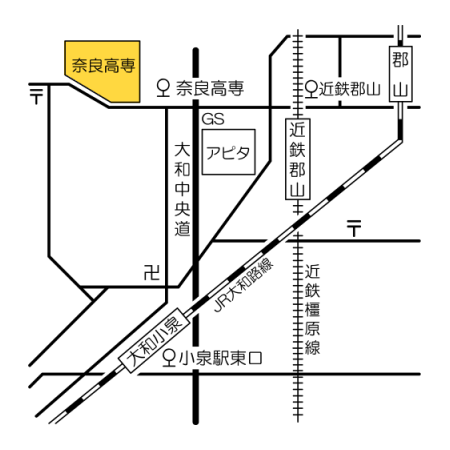

アクセス
※校内に駐車場は設置しておりません。ご来場の際には公共交通機関等をご利用ください。
奈良工業高等専門学校
〒639-1080 奈良県大和郡山市矢田町22番地 (Googleマップ)
近鉄郡山駅よりお越しの場合
「近鉄郡山駅」バス停より、奈良交通「小泉駅東口」または「矢田寺前」行きバスへ
ご乗車いただき「奈良高専」にて下車して下さい。
所要時間：約15分
バス時刻表(土曜日用ダイヤ)
バス時刻表(日曜・祝日用ダイヤ)
JR大和小泉駅よりお越しの場合
「小泉駅東口」バス停より、奈良交通「近鉄郡山駅」行きバスへ
ご乗車いただき「奈良高専」にて下車して下さい。
所要時間：約20分
バス時刻表(土曜日用ダイヤ)
バス時刻表(日曜・祝日用ダイヤ)